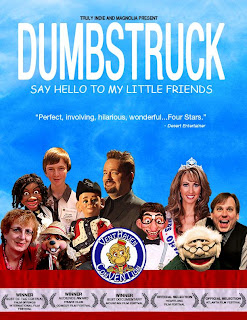

Dumbstruck - the Movie
3/31/2011
{kind=link}

{kind=link}
Adelia and I had the special opportunity this past weekend to screen the soon to be release movie, Dumbstruck, written and directed by Mark Goffman. Dumbstruck follows five ventriloquists at all levels of ability over the course of a year, letting you see into their lives both on stage as well as behind the scenes. Entertaining, thought provoking, and more. All ventriloquists should see this movie.
If you are fortunate to live near locations of one of the upcoming screenings, be certain to make plans to do so: Atlanta, GA, April 15; Washington, D.C., April 22; New York, NY, April 22; Los Angeles, CA, April 29; Dallas, TX, May 6; Indianapolis IN, May 13; Minneapolis MN, May 20, and St. Louis, MO, May 20. For further details and locations: http://www.dumbstruckthemovie.com/ .
While I'm sure the selection of ventriloquists featured in the movie will always be debated by the vent community, I thought the presentation was fair and balanced, with excellent editing which kept the movie flowing logically and smoothly to an appropriate conclusion. I enjoyed the fact that the ventriloquists themselves were always the focal point. Never was an interviewer seen or heard. And the content was such that I, as a grandfather, can without hesitation invite my granddaughters to join me for viewing.
On the downside, and perhaps a bit selfishly, I do not feel the movie will inspire many folk to take up the art. As one who has spent 40 years teaching ventriloquism, I was hoping for more than this work seems to provide in the way of motivating folk (especially young people), to take up the art. But before pointing fingers at those who produced the movie, perhaps there's some self-examination that needs to take place in our community. Decide for yourself. If you enjoy television reality shows, or shows such as Undercover Boss, then you'll likely enjoy this movie.
Watch for Dumbstruck, the movie coming to your area. Or watch for its release on DVD. You can view a trailer HERE , now.